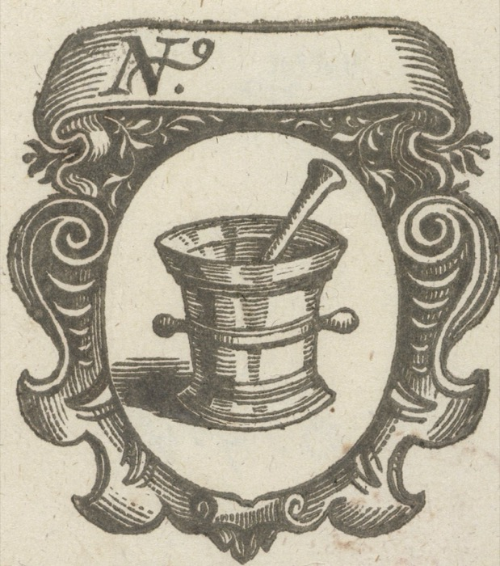
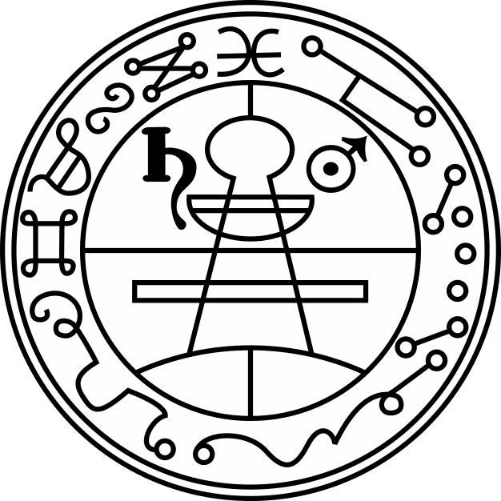
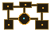
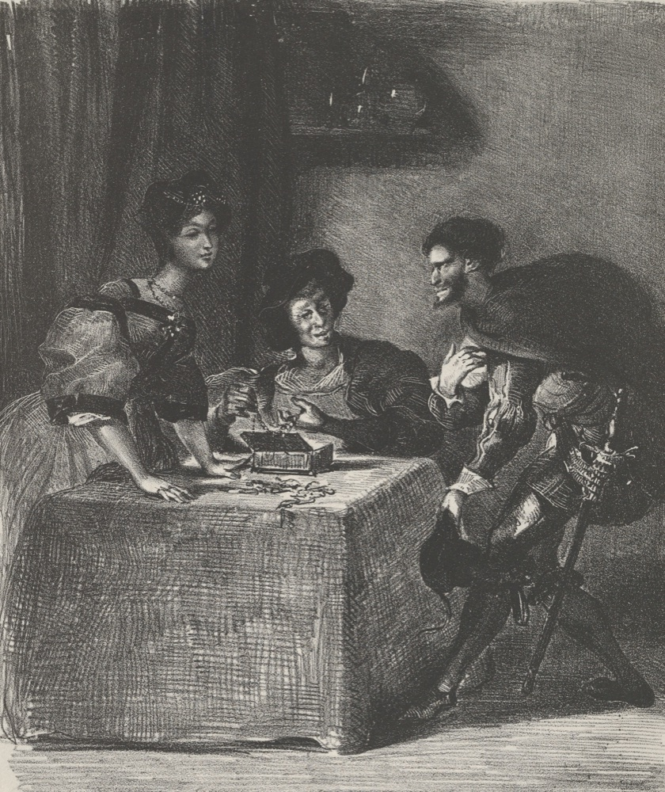
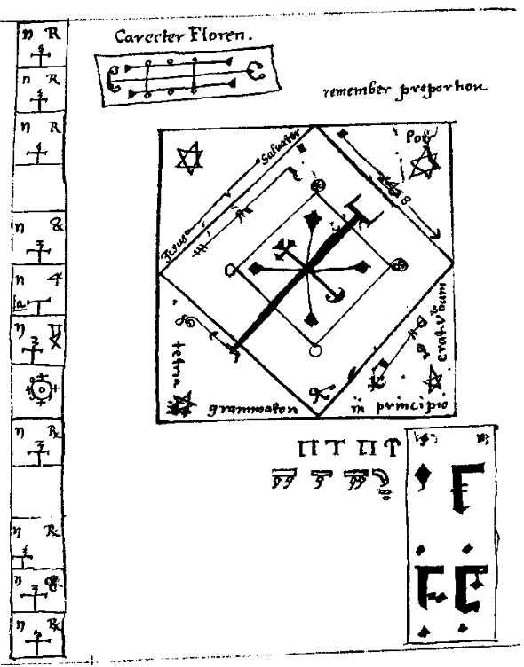
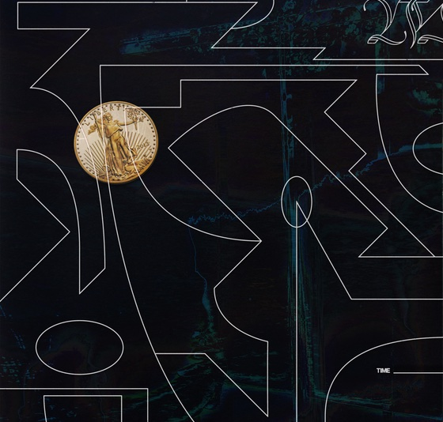
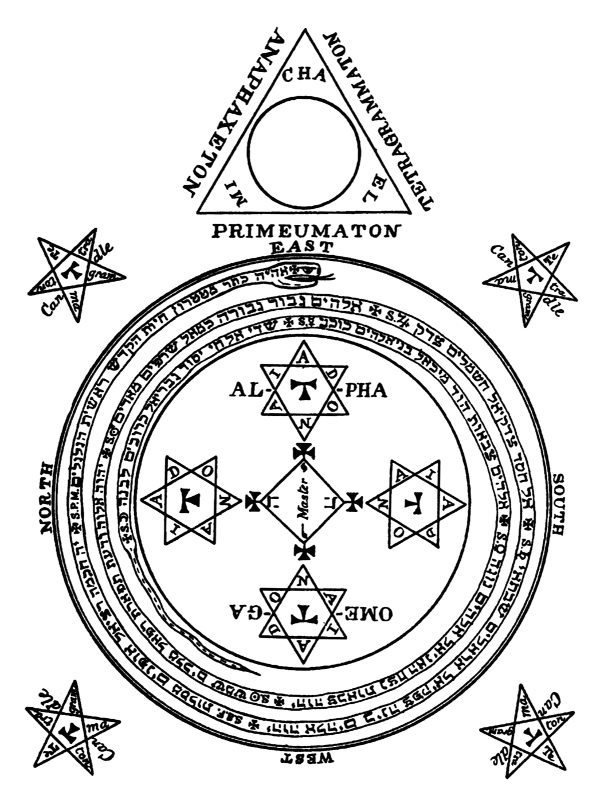
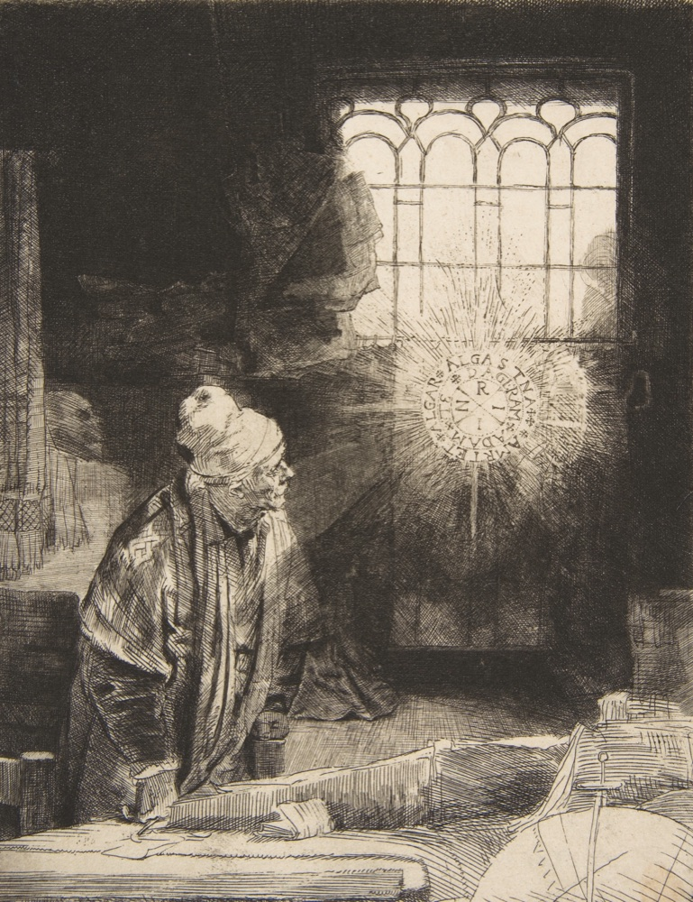
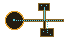

Nigel Gilbert. Software engineer. AI engineer after hours.

"A name. Yes. To conjure with, perhaps. A lord of hell, surely."Ashpool, on hearing "Wintermute". Neuromancer, 1984.



"Appear in a fair human shape, without terror, and speak plainly."
The assistant persona. RLHF. The chat window. The form is the product.

Read as written. Command in borrowed names. Escalate: conjure, constrain, invoke, curse.
System prompt. Spec. Rules of engagement. "You are an expert in..."


Magician in the circle. Spirit in the triangle. They never overlap.
Sandbox. Network policy. Permission scopes. Classifiers.
"Go in peace. Harm none on the way. Return when called." Stay in the circle until it is gone.
Teardown. Revoke credentials. Clean up artifacts. Monitoring that can end a run.

Fasting, confession, consecrated tools, the right hour. Years learning the names and what each one twists.
Domain expertise is the operator's protection. Choose vocabulary on purpose. Know the field well enough to see drift.

| DeepHat-V1-7B | Mythos 5 | |
|---|---|---|
| Power | 7B, laptop | Frontier |
| Binding | License text | Classifiers, gating, monitoring |
| Who holds the ring | The operator | The vendor |
| Failure mode | Vessel ships open | Vessel opened by a trusted hand |